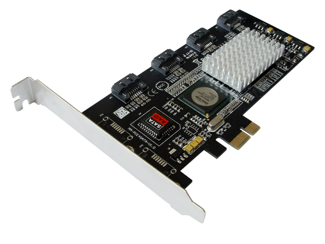
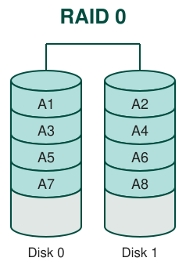
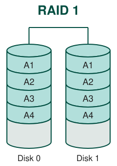
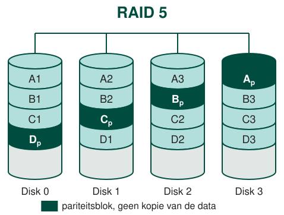
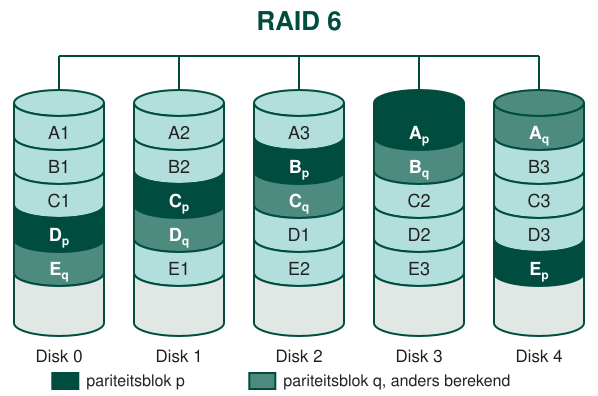
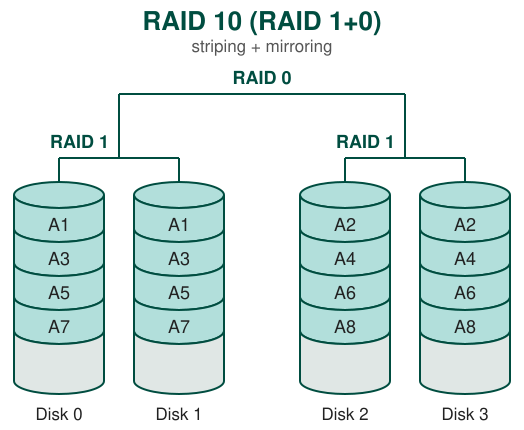
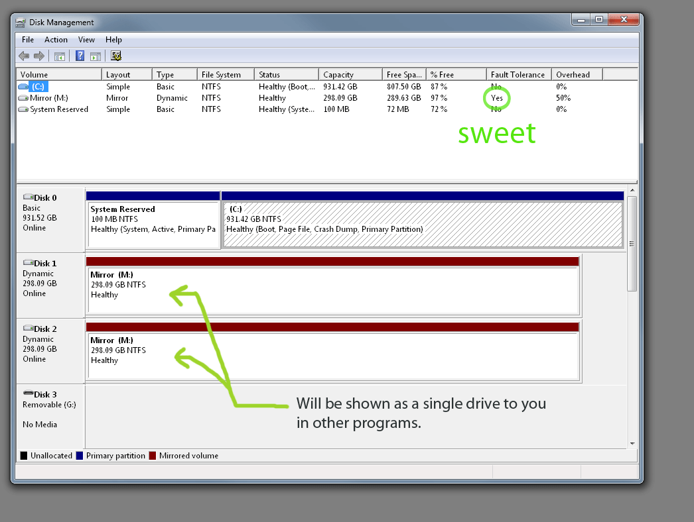

Processoren zijn decennialang zeer snel sneller geworden. Dit is helaas niet het geval wat de snelheid van (klassieke) harde schijven betreft.
In de jaren 70 was de gemiddelde seek time 50 tot 100 ms. Tot op heden is de seek time herleid tot zo'n 10 ms. Dit is op zich een zeer goede prestatie maar niet voldoende vergeleken met de evolutie die de processor doormaakt.
Om een processor nog sneller te maken gebruikt men parallellisme. Dit betekent dat we meerdere kernen laten samenwerken zodat we verschillende taken tegelijkertijd kunnen uitvoeren. In een moderne computer vind je makkelijk vier kernen terug.
Met RAID proberen we hetzelfde te doen. We laten meerdere harde schijven samenwerken zodat deze tegelijkertijd data kunnen lezen of schrijven. Een bijkomend voordeel hiervan is redundantie. Onze data staat verspreid op verschillende harde schijven waardoor, in het geval van een schijfcrash, deze alsnog kan gerecupereerd kan worden.
Belangrijk is om op te merken dat je, wanneer je aan RAID wil doen, je ook een RAID controller nodig hebt. Deze kan je bijvoorbeeld kopen in de vorm van een PCI Express kaart met daarop SATA aansluitingen. Op sommige moederborden zit zelfs reeds een RAID controller ingebouwd!

Er zijn vele verschillende types RAID. In deze cursus bespreken we volgende soorten:
Zoals je weet staat RAID voor Redundant Array Of Independent Disks. RAID 0 spreekt dit acroniem al onmiddellijk tegen gezien deze opstelling allesbehalve redundant is. Sterker nog: RAID 0 verdubbelt de kans op het verliezen van alle data!
Dit komt doordat de data verspreid wordt over minstens twee harde schijven en de gegevens in kleine (enkele tientallen kB) blokken of stripes worden weggeschreven.
De lees en schrijfsnelheid wordt hiermee minstens verdubbeld gezien meerdere schijven tegelijkertijd gegevens kunnen ophalen of wegschrijven.
Theoretisch zou de snelheidsverhoging evenredig zijn met het aantal schijven die in een RAID 0 configuratie worden geplaatst. In de praktijk gaat deze vergelijking tot op een zeker moment op, maar op een bepaald moment is de bandbreedte van de controller te klein.
De kleinste schijf in de array bepaalt de omvang van het volledig RAID systeem. Heb je bijvoorbeeld drie schrijven: 100 GB, 150 GB en 200 GB dan zal de controller een schijf aanbieden van 300 GB (3 * 100 GB).
Bij om het even welke RAID opstelling doe je er altijd goed aan om iedere schijf met dezelfde specificaties uit te voeren.

Terwijl RAID 0 ook wel bekend staat als striping staat RAID 1 bekend als mirrorring.
Bij RAID 1 wordt de data twee keer (of meer) identiek op de verschillende schijven opgeslagen. Wanneer één harde schijf faalt zal het computersysteem hier geen hinder van ondervinden en gewoon blijven verder werken. De RAID controller vangt dit op door de andere schijven de I/O operaties te laten uitvoeren.
Het is echter geen goed idee om deze 'defecte' toestand lang te laten aanslepen... Je weet immers dat een RAID opstelling typisch harde schijven bevat met dezelfde specificaties en dezelfde levensduur. Je vervangt best de defecte harde schijf zo snel mogelijk. De controller zal dan de inhoud van de nog correct werkende schijf kopiëren naar de nieuwe.
Naast de redundantie van data heeft deze opstelling nog een tweede voordeel. Het lezen gebeurt hier op (minstens) het dubbele van de snelheid ten opzichte van een enkele schijf opstelling. Het schrijven gaat even snel als op 1 enkele schijf.
Deze opstelling is heel eenvoudig toe te passen maar is vrij duur gezien je voor 1 bit te beveiligen ook 1 redundante bit nodig hebt.

Zoals je zal zien gebruikt RAID 5 meer harde schijven maar gaat er minder ruimte verloren aan het opslaan van redundante data. De totale kost per bit van RAID 5 is dus iets lager in vergelijking met RAID 1 maar de werking is complexer.
In RAID 5 proberen we het beste van de twee technologieën uit RAID 0 en RAID 1 te combineren. Uit RAID 0 halen we het principe van striping waardoor we parallel bestanden kunnen lezen en schrijven. Uit RAID 1 halen we mirroring maar deze keer pakken we dat iets intelligenter aan.

In plaats van een exacte kopie van de data bij te houden slaan we enkel de pariteit op. Onderstel A1 = 0, A2 = 0, A3 = 1. De pariteit Ap berekenen we door de XOR operatie te doen op deze drie bits. Ap = A1 + A2 + A3 = 0 + 0 + 1 = 1.
Onderstel dat Disk 1 faalt, dan is A2 onbekend. We kunnen deze nu reconstrueren door opnieuw de XOR bewerking te doen van alle overige bits: A2 = A1 + A3 + AP = 0 + 1 + 1 = 0.
Je hebt voor RAID 5 minstens drie schijven nodig: twee met data en een met de pariteit. In de figuur hierboven staan er vier.
Met RAID 5 hebben we een veilige configuratie maar het aantal bits dat we gebruiken om dit te bereiken is nu niet 1/2 maar wel 1/4. RAID 5 is dus de helft goedkoper in dit voorbeeld!
De leessnelheid is, gezien we gebruik maken van striping, vergelijkbaar met RAID 0. De schrijfsnelheid is ook behoorlijk maar iets lager gezien we een checksum moeten berekenen.
Zowel RAID 1 als RAID 5 beschermen de gebruiker tegen het uitvallen van één harde schijf maar waar je vaak niet op rekent is het moment dat er twee harde schijven tegelijkertijd falen.
Onwaarschijnlijk, denk je misschien... Maar helaas, niets is minder waar. Alle schijven in een RAID array zijn meestal van dezelfde fabrikant, hetzelfde type, hebben al exact evenveel uren gedraaid en bewerkingen ondergaan. Als één schijf versleten is, zijn ze allemaal versleten. Het is dan ook van cruciaal belang dat als een RAID array begint te falen je deze zo snel mogelijk tracht te herstellen.
RAID-6 is een eerder ongewone configuratie en vind je niet vaak terug. Ze slaagt er echter er wel in om een tweevoudige schijfuitval moeiteloos te overleven.

Je hebt voor RAID 6 minstens vier schijven nodig: twee met data en twee met pariteit. In de figuur hierboven staan er vijf.
Naast een aantal dataschijven zijn er nu twee pariteit schijven. Deze pariteiten worden opnieuw gespreid over de verschillende harde schijven zodat we de data kunnen herstellen als er één of twee schijven uitvallen.
Omdat we de pariteiten spreiden kunnen we ook parallel bestanden lezen en schrijven.
Zoals je al kan vermoeden is RAID-6 duur. Zowel de controller als de twee extra dataschijven zijn niet goedkoop maar als redundantie een must is, is RAID-6 een relatief veilige oplossing.
Als we het beste van twee werelden willen combineren dan combineren we verschillende RAID configuraties. Bij RAID-10 worden RAID-0 (snel maar onveilig) en RAID-1 (veilig) gecombineerd tot snel en veilig.
Met slechts 4 schijven heb je een systeem dat bestand is tegen de uitval van (minstens) een enkele schijf en zeer snelle schrijf- en leesoperaties toelaat. Het is natuurlijk ook een vrij complexe en dure opstelling.

Wie geen centen heeft om een RAID controller te kopen maar wel een extra harde schijf heeft liggen kan de RAID controller laten emuleren door software. In Windows is dit zelfs standaard aanwezig. Het besturingssysteem is dan de controller.

Wie eens wil experimenteren met software RAID kan aan de slag op deze link: https://www.pcsteps.com/738-software-raid-windows-storage-pools/
Een hot spare is een extra harde schijf die al aan de controller hangt zonder dat er data op staat. Valt er een schijf uit, dan neemt de controller die reserveschijf meteen in gebruik en begint de rebuild zonder dat er iemand aan te pas komt.
In Windows is het mogelijk om schijven te configureren als JBOD, striped of mirrored volumes.
In een JBOD (Just a Bunch Of Disks) / spanned volume worden alle schijven samengevoegd tot 1 grote schijf. Bestanden worden sequentieel opgeslagen. Als de ene schijf vol is gaan we over naar een andere. Dit is dus geen echte RAID maar zorgt gewoon dat meerdere schijven als 1 logisch volume worden aanzien. Het levert geen redundantie en geen snelheidswinst op.
Met een striped volume simuleer je in feite RAID-0. Crasht één schijf, dan ben je alles kwijt. Een Windows striped volume kan in principe niet door een andere besturingssysteem worden gelezen. Het voordeel is uiteraard wel de performance boost. Regelmatig een backup nemen is de boodschap.
Een mirrorred volume bootst RAID-1 na. Ook hier is er een zekere snelheidswinst bij leesoperaties maar het grootste voordeel is uiteraard dat er één schijf mag uitvallen en dat je niet te kampen hebt met dataverlies. Een aanrader!